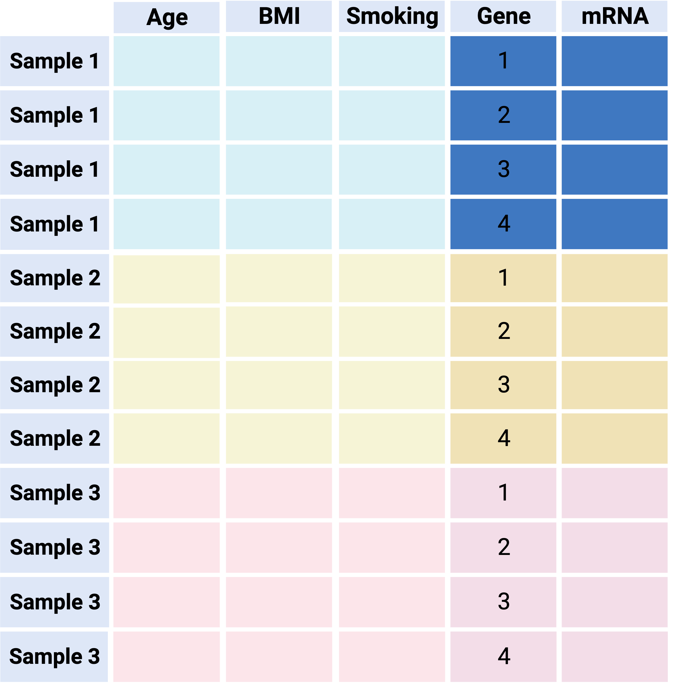
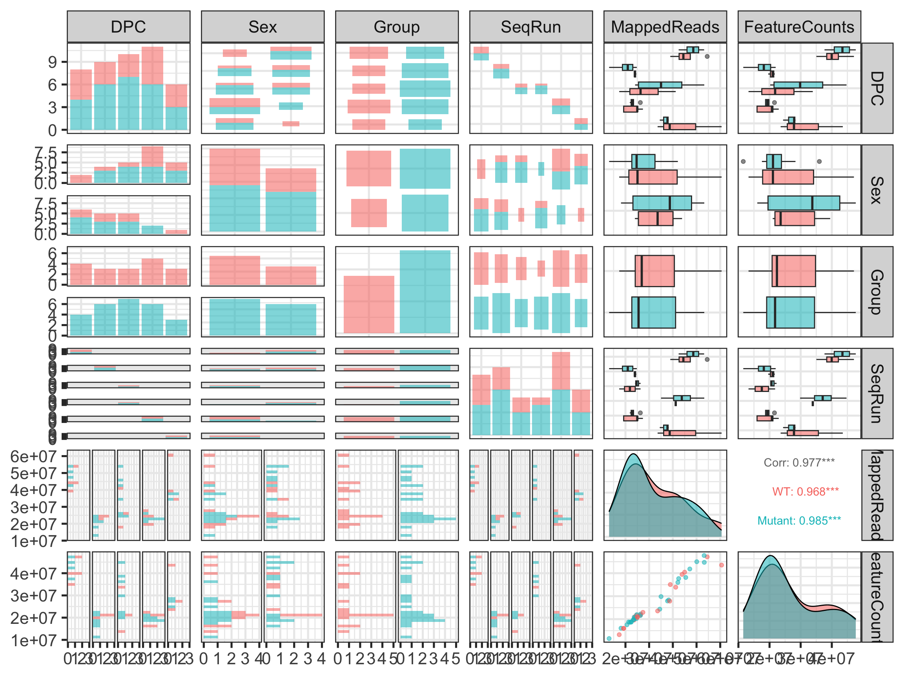

[1] 12158 44[1] 44 8January 16, 2024
Learning objectives:
Understand general principles on organizing your data
Be familiar with the main components of exploratory data analysis (EDA)
Recognize and avoid common pitfalls of data visualization
Understand the impacts of data quality and experimental design
These slides were made using this Quarto Markdown file; it contains the code used to generate the R plots shown here
The companion notes (GitHub Markdown document) explore multiple ways of making these plots and more detailed info
Instructions to create .pdfs from the .html slides:
E keyCTRL/CMD+PGompers et al. (Nature Neuroscience 2017) performed RNA-seq on mice from two different genotypes (18 WT vs 26 CHD8 mutant) and 5 developmental stages
“Using a statistical model that accounted for sex, developmental stage and sequencing batch, we tested for differential expression across 11,936 genes that were robustly expressed”
We’ll use this dataset throughout this lecture to illustrate EDA


As is often the case, this data was obtained in two separate files
Main data file: expression values - one per gene, per sample ( \(G\) genes \(\times\) \(N\) samples)
Metadata file: several covariates/experimental design variables for each sample ( \(N\) samples \(\times\) \(P\) covariates)
We read these into R (see Rmd source code and companion notes) as a data.frame or tibble - matrix-like objects that have column names, and variable types for each column:
Columns of main data matrix should match the rows of the metadata matrix exactly
These two objects should represent the same set of samples (and be in the same order)
[1] "Sample_ANAN001A" "Sample_ANAN001B" "Sample_ANAN001C" "Sample_ANAN001D"
[5] "Sample_ANAN001E" "Sample_ANAN001F"[1] "Sample_ANAN001A" "Sample_ANAN001B" "Sample_ANAN001C" "Sample_ANAN001D"
[5] "Sample_ANAN001E" "Sample_ANAN001F"[1] TRUE Sample_ANAN001A Sample_ANAN001B Sample_ANAN001C Sample_ANAN001D
0610007P14Rik 5.238647 5.042397 5.364602 5.207641
0610009B22Rik 4.251070 4.568908 4.625527 4.568743
0610009O20Rik 4.807282 4.743503 4.921915 4.813903
0610010F05Rik 4.830067 5.063055 4.861288 4.957009
0610010K14Rik 5.958641 5.810707 5.851939 6.043380
0610011F06Rik 4.619302 4.579443 4.900748 4.802624
Sample_ANAN001E Sample_ANAN001F Sample_ANAN001G Sample_ANAN001H
0610007P14Rik 5.222326 5.129427 5.239697 5.127338
0610009B22Rik 4.555767 4.412691 4.253776 4.205859
0610009O20Rik 4.812471 4.807076 4.828430 4.708997
0610010F05Rik 5.065935 4.948113 5.067492 5.124294
0610010K14Rik 5.997013 5.979884 5.902530 5.846258
0610011F06Rik 4.756396 4.828523 4.575162 4.868060
Chd8.e14.S12 Chd8.e14.S13 Chd8.e14.S14 Chd8.e14.S16 Chd8.e14.S17
0610007P14Rik 4.841569 5.197562 4.825154 5.181760 5.070708
0610009B22Rik 4.452122 4.746104 4.747871 4.789378 4.862351
0610009O20Rik 4.455875 4.649412 4.338314 4.555878 4.490673
0610010F05Rik 5.314438 5.387970 5.523043 5.308837 5.514546
0610010K14Rik 5.855191 6.148984 6.148754 6.098012 6.174872
0610011F06Rik 4.391892 4.890393 4.486821 4.836696 4.446990
Chd8.e14.S18 Chd8.e14.S19 Chd8.e14.S20 Chd8.e14.S21
0610007P14Rik 5.237254 5.283928 5.196948 5.022812
0610009B22Rik 4.871463 5.062306 4.819321 4.719951
0610009O20Rik 4.474563 4.597433 4.578242 4.506912
0610010F05Rik 5.430677 5.185067 5.477901 5.488947
0610010K14Rik 6.253634 6.561689 6.133367 6.032934
0610011F06Rik 4.698659 5.281168 4.785467 4.610248
Chd8.e17.5.1_S158 Chd8.e17.5.2_S159 Chd8.e17.5.4_S161
0610007P14Rik 5.504698 5.563476 5.469537
0610009B22Rik 3.880660 4.366783 4.187023
0610009O20Rik 4.367506 4.074845 4.016735
0610010F05Rik 5.352970 5.406458 5.437642
0610010K14Rik 6.020094 5.818114 6.029098
0610011F06Rik 4.222639 4.064907 4.237808
Chd8.e17.5.5_S162 Chd8.e17.5.6_S163 Chd8.e17.5.1_S1
0610007P14Rik 5.210378 5.747802 5.360175
0610009B22Rik 3.896679 4.109132 4.083653
0610009O20Rik 4.260492 4.310498 4.171089
0610010F05Rik 5.270270 5.498813 5.237495
0610010K14Rik 5.830401 6.202582 5.907929
0610011F06Rik 4.255365 4.301042 4.208392
Chd8.e17.5.2_S2 Chd8.e17.5.3_S3 Chd8.e17.5.4_S4 Chd8.e17.5.5_S5
0610007P14Rik 5.396869 5.480500 5.576968 5.792268
0610009B22Rik 4.012442 4.043540 4.023286 4.115983
0610009O20Rik 4.181214 4.075280 4.243173 4.396101
0610010F05Rik 5.359145 5.590551 5.466983 5.332507
0610010K14Rik 6.142755 6.067490 5.856817 6.354569
0610011F06Rik 4.355365 4.199820 4.108307 4.591746
Chd8.P0.S1 Chd8.P0.S10 Chd8.P0.S11 Chd8.P0.S2 Chd8.P0.S3
0610007P14Rik 5.004910 5.618407 5.042920 5.516423 5.249834
0610009B22Rik 3.171498 3.817326 3.381746 3.585340 3.481041
0610009O20Rik 4.262572 4.276003 4.245660 4.234671 4.302060
0610010F05Rik 5.063260 5.308997 5.113254 5.273173 5.179340
0610010K14Rik 5.968141 6.273270 5.865349 6.197163 6.144795
0610011F06Rik 3.834333 4.442323 4.143605 4.277508 4.370633
Chd8.P0.S4 Chd8.P0.S5 Chd8.P0.S6 Chd8.P0.S7 Chd8.P0.S8 Chd8.P0.S9
0610007P14Rik 5.490179 5.330979 5.089818 5.309648 5.207886 5.280196
0610009B22Rik 3.814849 3.634283 3.425465 3.657936 3.647259 3.641667
0610009O20Rik 4.262546 4.112654 4.331208 4.281473 4.390390 4.241503
0610010F05Rik 5.254348 5.272861 5.208265 5.232609 5.102297 5.227704
0610010K14Rik 6.153272 6.076559 6.136792 6.236681 6.217135 6.246569
0610011F06Rik 4.206831 4.138643 4.091530 4.309412 4.398383 4.260990
Chd8.adult.S23 Chd8.adult.S24 Chd8.adult.S25 Chd8.adult.S28
0610007P14Rik 5.117776 5.105053 5.074071 5.274795
0610009B22Rik 3.736176 4.437970 4.150157 4.726862
0610009O20Rik 4.218049 4.409190 4.386743 4.494319
0610010F05Rik 4.391540 3.700743 3.745234 3.602500
0610010K14Rik 5.245851 4.827066 4.953091 4.971989
0610011F06Rik 4.562028 4.714897 4.696579 5.080126
Chd8.adult.S29 Chd8.adult.S31
0610007P14Rik 5.051701 5.000228
0610009B22Rik 4.046562 4.485514
0610009O20Rik 4.402777 4.321922
0610010F05Rik 3.715847 3.912299
0610010K14Rik 4.910206 4.861016
0610011F06Rik 4.787186 4.849831# A tibble: 44 × 8
Number Sample DPC Sex Group SeqRun MappedReads FeatureCounts
<dbl> <chr> <dbl> <fct> <fct> <fct> <dbl> <dbl>
1 1 Sample_ANAN001A 12.5 F Mutant A 42452222 37655856
2 2 Sample_ANAN001B 12.5 M WT A 54503162 47106938
3 3 Sample_ANAN001C 12.5 M WT A 44978512 40448118
4 4 Sample_ANAN001D 12.5 F Mutant A 50099336 44993589
5 5 Sample_ANAN001E 12.5 F Mutant A 47163546 41840678
6 6 Sample_ANAN001F 12.5 F WT A 43893480 39483622
7 7 Sample_ANAN001G 12.5 F Mutant A 53208684 47697298
8 8 Sample_ANAN001H 12.5 F WT A 38925414 35056860
9 9 Chd8.e14.S12 14.5 M WT B 23622816 19586363
10 10 Chd8.e14.S13 14.5 F WT B 23974703 21019829
# ℹ 34 more rowsHow you set up your input files for easy reading into R
Easiest to work with are text files (e.g. tab-delimited .tsv)
Excel files not uncommon but not recommended
Almost always some data cleaning/wrangling involved (e.g. checking consistency, recoding, renaming variables)
Within R, being able to refer to subsets of both data sets (main data & metadata) and other manipulations that require “matching” the expression data with the sample information (“slicing and dicing”)
For example: “Get me the expression level data for CHD8 in the female adult wild type mice” – this uses information from both sets
In practice, you may have to do it multiple ways to play nice with different R packages (e.g. one way for visualization, and another for downstream analysis)
Option 1 - “Separated”: Keep main data and metadata tables separate
Pros:
Minimal startup effort / extra code
Can be compatible with downstream analysis methods (e.g. Bioconductor)
Cons:
Risky: easy to make a mistake when subsetting and/or reordering samples - extra sanity checks required
Not a convenient format for visualization since main data is separated from its metadata
Overall: not recommended
Option 2 - “The tidy way”: Combine main data & metadata into one ‘long’ table
Pros:
Unambiguous - keeps all data in one object with one row per observation (e.g. each sample/gene combination is one row, along with all its metadata)
Plays nice with tidyverse tools (e.g. dplyr manipulations, ggplot2 visualization)
Cons:
‘long’ format is inefficient data storage - sample information is repeated
Not compatible with many tools for downstream analysis (e.g. Bioconductor)
Overall: recommended for EDA/visualization

# A tibble: 534,952 × 10
gene Sample Expression Number DPC Sex Group SeqRun MappedReads
<chr> <chr> <dbl> <dbl> <dbl> <fct> <fct> <fct> <dbl>
1 0610007P14Rik Sample_… 5.24 1 12.5 F Muta… A 42452222
2 0610009B22Rik Sample_… 4.25 1 12.5 F Muta… A 42452222
3 0610009O20Rik Sample_… 4.81 1 12.5 F Muta… A 42452222
4 0610010F05Rik Sample_… 4.83 1 12.5 F Muta… A 42452222
5 0610010K14Rik Sample_… 5.96 1 12.5 F Muta… A 42452222
6 0610011F06Rik Sample_… 4.62 1 12.5 F Muta… A 42452222
7 0610012G03Rik Sample_… 4.03 1 12.5 F Muta… A 42452222
8 0610030E20Rik Sample_… 3.22 1 12.5 F Muta… A 42452222
9 0610031J06Rik Sample_… 4.38 1 12.5 F Muta… A 42452222
10 0610037L13Rik Sample_… 4.23 1 12.5 F Muta… A 42452222
# ℹ 534,942 more rows
# ℹ 1 more variable: FeatureCounts <dbl>Option 3 - “The Bioconductor way”: Combine main data & metadata into one specially formatted object
Pros:
Unambiguous: keeps all data in one object with special slots that can be accessed with handy functions
Plays nice with Bioconductor tools
Efficient storage (no duplication of information like tidy way)
Cons:
Specific to Bioconductor
Not a compatible format for visualization (e.g. ggplot2)
Overall: recommended for downstream analysis (e.g. Differential Expression)


SummarizedExperiment: A special object format that is designed to contain data & metadata
Comes along with handy accessor functions
Many related / similar types of objects for specialized data types (e.g. RangedSummarizedExperiment, SingleCellExperiment, DGEList)
Understand / get a feel for the data
Formulate hypotheses / develop models
Identify problems
Is the file the expected size? Format?
Do we have the expected number of samples?
Do the sample names in both files match? (Do not assume same ordering!)
Are sample / feature names formatted correctly (e.g. no Excel conversion errors)?
What do features represent? (e.g. Gene names, probe identifiers, etc.)
Is the data numeric? Integers or decimal? Ratios (to what?)
Are the data on a log scale? If so what is the base?
Are there missing data points? What do they mean?
Do factors have the expected number of levels?
Do we have all the sample information we need?
If you are the one generating the data, save yourself grief by paying attention to these issues up front - Document what you did and be consistent!
If you are the analyst, hopefully you were involved in the design stage so there will be fewer surprises
The measured expression level of gene \(g\) is the combination of many effects
Analysis goal is often to determine relative role of effects - separate signal from “noise”
If there is no variability, you don’t have any information - key is controlling/understanding sources of wanted vs. unwanted variability
First line of defense: Know the enemy
You can only “correct” for things you know about
Keep track of potential sources of variance: Batches of reagents, slides, personnel, processing dates, etc.
Design experiments to minimize impact of technical variability
Ensure appropriate replication
Biological (important)
Technical (usually less important but might need to convince yourself)
If you don’t look at the data, you are likely going to miss important things
Not just at the beginning, but at every stage
That could mean making plots, or examining numerical patterns - probably both
“Sanity checks” should make up a lot of your early effort
Blindly following recipes/pipelines/vignettes/seminar code → trouble

What is the size of the data?
What is the range of the data?
Are there any missing values?
Are the data transformed in any way?
class: SummarizedExperiment
dim: 12158 44
metadata(0):
assays(1): logrpkm
rownames(12158): 0610007P14Rik 0610009B22Rik ... Zzef1 Zzz3
rowData names(0):
colnames(44): Sample_ANAN001A Sample_ANAN001B ... Chd8.adult.S29
Chd8.adult.S31
colData names(8): Number Sample ... MappedReads FeatureCounts[1] -7.87235 13.26689EDA is “compute a little and plot a lot”
Exploratory plots can be quick and dirty - making them publication quality takes a lot of time and effort
I’ll show a few simple approaches that are common in genomics
Reminder that code to generate the plots you see here is posted in the companion notes linked earlier
Paper reported that CHD8 went down over time, and is lower in the mutant: confirmed!
Note that we are not doing any formal “analysis” here nor trying to make this plot beautiful – keeping it very simple for our exploration
How to best summarize patterns in the data?
What is the sample size?
Is the distribution symmetrical, or skewed?
Are there any outliers?
Quick and dirty; reasonable tool to summarize large amounts of data
Not ideal if the distribution is multimodal
Don’t use box plots (alone) when you have small numbers of points; show the points instead!
This is nice but unwieldy (or won’t work) for large data sets
Sex is not that well balanced; all but one of the adults is male
There is a batch confound: The stages were run in different batches (except 17.5 was split in two)
Mapped reads varies with the batches (SeqRun)

Doesn’t complain when handed slightly messy data and has sensible default behaviour
Allow easy control of layout such as annotations and scale bar
Allow easy control over clustering behaviour (row/column ordering)
base::heatmap - ok for quick and dirty but otherwise very limited
pheatmap - Default colour schemes not ideal, otherwise good option (used in STAT 540 seminars)
ComplexHeatmaps - most powerful/flexible, but a bit more complex to learn
Rows are scaled to have mean 0 and variance 1 (z-scores)
Subtract the mean; divide by the standard deviation - use scale() on the data rows (some packages will do this by default)
It is now easier to compare the rows and see a bit of structure

Range of values is clipped to (-2,2): aything more than two SDs from the row mean is set to 2
Limit values of 2 or 3 SDs are common

An entire data set (>10k rows)
If the cells are less than 1 pixel, everything starts to turn to mush and can even be misleading
If your heatmap has too many rows to see labels (genes), make sure it is conveying useful information (what are you trying to show?)
RColorBrewer: scales based on work of visualization expertsDivergent: colours pass through black or white at the midpoint (e.g. mean). Ideal if your original data are naturally “symmetric” around zero (or some other value) - Otherwise it might just be confusing
Sequential: colours go from light to dark. Darker colours mean “higher” by default in RColorBrewer. No defined midpoint.
Too many different colours to readily interpret relative ordering of values
Not recommended to use these types of scales for continuous values
Rainbows or scales with many distinct colours are better for factors / categorical variables
Pick an appropriate colour scale
Show a scale bar (so don’t use base::heatmap)
Either cluster rows / columns, or order by something meaningful (e.g. sample info)
Add annotation bars of meaningful covariates
If you have missing data points, make sure it is obvious where they are (e.g. different colour)
Purpose: Evaluate whether data aligns with expectations:
Three principles of EDA:
Let the data speak for itself - avoid dynamite plots in favor of boxplots, overlayed with points if feasible number
Avoid overplotting - use transparency or 2D density in scatterplots; make sure heatmap cells aren’t too small
Consider transformations (e.g. log) for skewed distributions
Use colour intentionally to convey information
Additional exploratory techniques will be discussed later in the course (e.g. Clustering, PCA)
Fig 1, 10.1038/sj.ebd.6400436
General types of issues:
High technical variability
Outliers
Batch artifacts (or other systematic trends)
Effects on the data:
Some will yield false positives (confounds, “false signals”)
Others will yield false negatives (by decreasing signal-to-noise)
Here I mean “Removing part of the data from a sample” and doing that to all samples
In many studies, especially gene expression, it is common to remove genes that have no or very low signal (“not expressed”)
Deciding what to remove is often not straighforward, but make a principled decision and stick with it (see next slide)
Filters must be “unsupervised”
Filtering strategy should treat all samples the same
Filtering strategy should be decided up front
Leek et al. 2010 Nature Rev. Genetics 11:733
Magnitude of batch effects vary
Consider correcting for them if possible - batch artifact detection and correction will be covered in more detail in a later lecture
Hard to define
“A sample that deviates significantly from the rest of the samples in its class”
“An observation differing widely from the rest of the data.”
“A data point notably further out from the central value than the others. Outliers invite explanation as observational errors, or intrusions from another set, or something of that sort.”
“… a value that lies 1.5 IQR beyond the upper or lower quartile”
Features (e.g. genes) are not usually called “outliers” in the sense of “should remove from the data”
Relative vs. absolute quality is important
We might consider a sample an outlier if (relative to others):
If a sample is questionable, we might ask: Is there anything suspect in the experimental process? (e.g. “Sample dropped on floor”)
– this will help justify decisions to remove a sample beyond arbitrary criteria like “>1.5 IQR”
A heatmap of the sample-sample correlation matrix (generally a useful diagnostic plot)
Expect correlations to be tighter within experimental groups than across groups
There are no firm guidelines for evaluating this … but you could apply a rule like “out of >1.5 IQR”
In practice, outliers are often pretty obvious